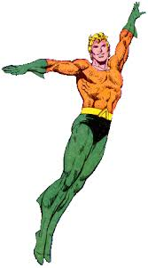

Who is Aquaman?
Aquaman is a fictional superhero appearing in American comic books published by DC Comics. Created by Paul Norris and Mort Weisinger, the character debuted in More Fun Comics #73 (November 1941). Initially a backup feature in DC's anthology titles, Aquaman later starred in several volumes of a solo title. During the late 1950s and 1960s superhero-revival period known as the Silver Age, he was a founding member of the Justice League of America. In the 1990s Modern Age, Aquaman's character became more serious than in most previous interpretations, with storylines depicting the weight of his role as king of Atlantis.